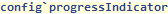
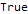
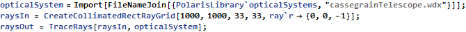
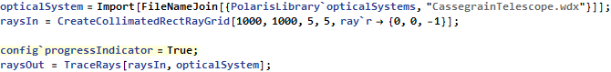
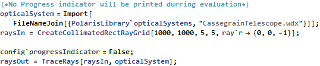

| CONFIG` SYMBOL |
config`progressIndicator
| config`progressIndicator
A user modifiable configuration parameter of Polaris-M. It allows the user to decide whether or not a progress indicator bar should be displayed for slow calculations. Setting this parameter to False will prevent an indicator from being shown. This parameter is disabled when config`parallelize===True since the parallel kernels cannot close the indicator. |

Data Type: Boolean
Default Value: True

 Basic Examples (3)
Basic Examples (3)
Find out what happens when just config`progressIndicator is entered:


An index value is assigned to the config data means it acts as a parameter to change the ray data.
Ray counter is turned on naturally:

This is helpful for large ray traces such as above:
Ray Tracing with and without a progress indicator:




 • •
• •  •
•  •
•  •
•  •
•  •
•  • •
• •  •
•  •
•  •
•  • •
• •  •
•  •
•  •
•  •
•  •
•